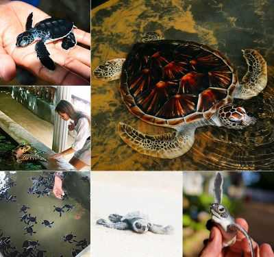
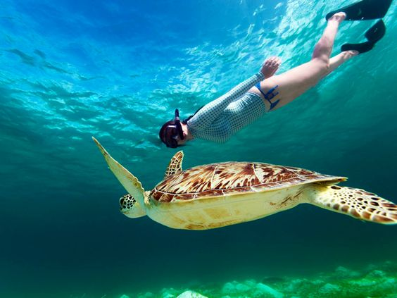
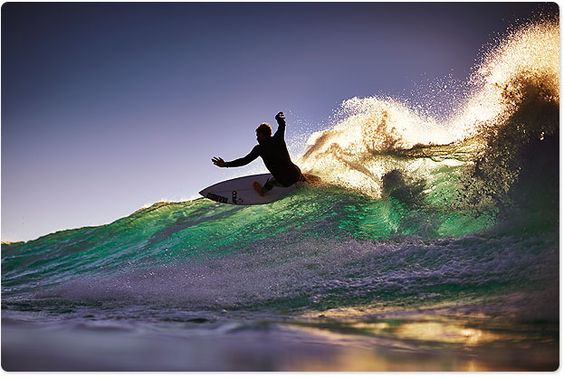
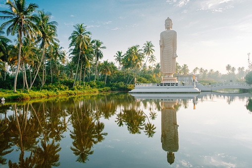
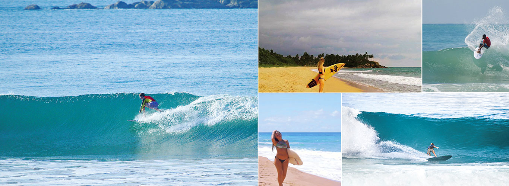

Things We Can Do In Hikkaduwa

1.Visit the sea turtle hatchery
Several turtle hatcheries may be found in and near Hikkaduwa. The Kosgoda Turtle Hatchery, Sea Turtle Farm & Hatchery, and Hikkaduwa Turtle Hatchery are a few of the well-known ones. By safeguarding their eggs, raising the hatchlings, and releasing them into the ocean, these institutions contribute to sea turtle conservation.

2.Snorkel with the sea turtles in Hikkaduwa
In Hikkaduwa, tourists can go snorkeling and get a chance to see various sea turtle species. These turtles can be observed floating gracefully through the water, grazing on seagrass beds, and occasionally rising for air. tourists can hire a local boat or dive operator to take them to the greatest snorkeling places in Hikkaduwa, or they can sign up for a guided snorkeling tour.

3.Take surfing lessons in hikkaduwa
There are several surfing schools and instructors in Hikkaduwa that offer lessons for all skill levels. These schools provide professional guidance and equipment to ensure a safe and enjoyable surfing experience. Surfing lessons in Hikkaduwa typically cater to different levels of expertise, ranging from beginners to advanced surfers. Whether you're a first-timer or looking to improve your skills, you can find suitable lessons to meet your needs. The instructors in Hikkaduwa's surfing schools are experienced and knowledgeable about the local surf conditions. They can provide valuable guidance on techniques, safety measures, and choosing the right waves.

4.Watch Baby Turtles Hatch and run for the ocean
Many nature lovers and conservationists are drawn to the mesmerising and heartwarming experience of seeing newborn turtles hatch and head for the ocean. On Sri Lanka's southwest coast, Hikkaduwa is well-known for its stunning beaches and its importance as a sea turtle breeding area. In Hikkaduwa, you may observe how baby turtles hatch and make their way to the sea by following these instructions:

5.Visit the Tsunami Museum in Hikkaduwa
Sri Lanka suffered a great deal when the Tsunami struck substantial portions of South East Asia in 2004. An organisation called the Community Tsunami Museum was created to preserve the memories of that terrible December 26th.The museum is split into three sections, the first of which gives visitors a wealth of knowledge on how tsunamis are created as well as a wealth of fantastic scientific and geological information. The second section, which includes numerous images of Hikkaduwa and surrounding villages during the time of the tsunami, will leave you breathless and genuinely in tears. Children are the focus of the museum's third section, which is designed to help them comprehend the tragedy. Sincerity dictates that you must visit this location, especially if you are travelling with children.

6.Water Sports
Hikkaduwa is well-known for its magnificent beaches, abundant marine life, and growing water sports industry. Water sports enthusiasts and beach lovers alike will enjoy the town's crystal-clear turquoise waters and warm tropical atmosphere. The following is an overview of some of the well-liked water sports you can participate in in Hikkaduwa,